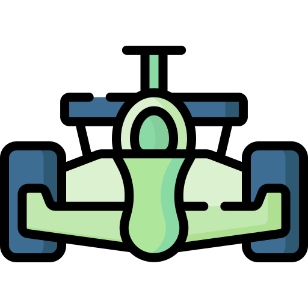

La Fórmula 1 es la categoría máxima en el mundo del automovilismo, es una competencia
entre 10 equipos con 2 pilotos cada uno, compiten en los "Grandes Premios" por ver quién
es el mejor. Los grandes premios se dividen en 5 sesiones las cuales explicaré más adelante,
en cada carrera se puntúan del 1 al 10 conforme los pilotos hayan terminado la carrera.
Existen 22 Grandes Premios en el calendario de la Fórmula 1 y el piloto que consiga más
puntos gana; Hay 2 campeonatos al final de la temporada "Campeonato de pilotos" y
"Campeonato de constructores".
Desarrollo
En la Fórmula 1 se batalla por quién es el mejor piloto y quién es la mejor escudería
(equipo)
hay desventajas en ciertos equipo contra otros, debido a esto se divide en 3; parrilla alta,
parrilla media y parrilla baja, aquí es donde se equilibra y se vuelve interesante el
asunto,
es necesario saber cuales son las escuderías que compiten entre sí, dependiendo a la
clasificación
de la parrilla en la que esté el equipo a final de la temporada, la Fórmula 1 les da
recursos
económicos a los equipos para poder mejorar sus monoplazas.
Motivación
Escogí el tema porque la Fórmula 1 para alguien que nunca haya visto este deporte
puede ser algo difícil de entender, la cantidad de datos que se muestran en las
transmisiones de televisión, los detalles que hay, las estrategias de los equipos,
vocabulario distinto que casi siempre es en inglés, entre otros muchos factores
que se encuentran dentro de los Grandes Premios de la Fórmula 1 hace que la gente
no entienda y sólo pueda ver una sola cosa... Coches dando vueltas. Pero la Fórmula 1
es mucho más que eso, en mi opinión es de los deportes más emocionantes y divertidos del
Mundo
cuando entiendes todo lo que sucede en la pista.
Automóviles Fórmula 1.
Top 10
mejores pilotos en la historia de la Fórmula 1
La Fórmula 1 es un deporte muy entretenido, que cada mínima acción puede afectar o mejorar
el rendimiento del coche, piloto y de la escudería misma. Todo empieza el viernes que es el
día en el que los pilotos prueban el coche por primera vez en el circuito que inicie la
temporada, el equipo hace ajustes, el piloto se adapta al coche y se preparan para el
sábado, el sábado es el día de clasificación este día se compone de 3 sesiones de
clasificación en la que se van descartando los pilotos hasta que alguno quede hasta arriba
de la tabla por la velocidad que llegó a alcanzar y de ahí se define la parrilla de salida
para el domingo, el domingo es el día más esperado para los aficionado ya que es el día en
el que la carrera da comienzo y al finalizar se abre una tabla de posiciones que les
proporciona puntos a los pilotos depende de en qué lugar hayan finalizado, los puntos se
distribuyen de la primera posición (el que gana más puntos) hasta la posición 10 (el que
gana menos puntos) y el resto de pilotos se quedan con un total de 0 puntos.
En el video se nos explica como funciona la Fórmula 1 detalladamente, donde empieza, los
días explicados de cuántos días dura un Gran Premio, lo básico que necesitas para entender
como funcionan los coche de la Fórmula, como es uno de los deportes que más dinero y
personas puede llegar a mover debido al alto grado de entretenimiento que esta proporciona,
explica también la división de parrilla alta, media y baja, como se ganan los mundiales y
como podemos entender las paradas en los pits.
Investigación
15/03/22
Entrenamiento de un piloto
Los pilotos de la Fórmula 1 son algunos de los deportistas más en forma del mundo aunque a muchas personas les cueste aceptarlo sabiendo que están sentados en un simple coche, la realidad es que manejar un coche a 300 kilómetros por hora no es tarea fácil, requiere una combinación de un talento increíble y una destreza atlética impresionante, a partir de 2018 se podría decir que se ha vuelto un reto muy desafiante para los pilotos de esta categoría tanto física como cognitivamente.
Los pilotos suelen realizar un entrenamiento de resistencia por la mañana y pueden hacer otro deporte como entrenamiento para fortalecer su resistencia como serían natación, ciclismo, remo, carreras, entre otras, es muy importante que los pilotos aparte de incrementar su resistencia, fortalezcan su cuello y sus hombros, esto lo hacen con aparatos electrónicos que se ajustan a las condiciones de una carrera para que el piloto esté preparado para las fuerzas y complicaciones que hay en estas.
Lo mejor está por venir Checo Perez.
División de un Gran Premio
Un Gran Premio está compuesto por 3 días en la pista y 1 en la prensa, aquí vamos a explicar detalladamente qué se hace en cada día.
Jueves: El día jueves no es más que entrevistas a los pilotos, a las cabezas de los equipos, rueda de prensa en pocas palabras y los fans pueden asistir a la pista para tomarse fotos con los pilotos y que les den autógrafos.
Viernes: El día viernes es el día en el que los pilotos exploran por primera vez el circuito con el monoplaza de la temporada, este día se divide en dos libres: libres 1 y libre 2, este día lo utilizan para implementar estrategias de carreras, explorar el circuito, conocer como se comporta el coche en el circuito, y la duración de las llantas en la pista.
Sábado: El día sábado es de los días más importantes y entretenidos, un día antes de la carrera, los pilotos por la mañana hacen el último libre de la semana (libre 3) en este libre los pilotos ya empiezan a jugarse un poco más en la pista, empieza a ir con mucha más velocidad, explorando los límites de la curva y conocer a la perfección el circuito. Después del libre 3 (al medio día del país en el que se encuentren) empieza la clasificación que se compone en Q1, Q2 y Q3 en la Q1 salen todos los pilotos a la pista para hacer sus mejores vueltas, tiene una duración de 18 minutos y se eliminan a los últimos 6 pilotos. La Q2 tiene el mismo objetivo que la Q1 solo que esta tiene una duración de 15 minutos y los neumáticos que lleven los pilotos en su vuelta más rápida son los neumáticos con los que van a tener que utilizar para la arrancada de la carrera del Domingo. La Q3 es la última clasificación donde los pilotos compiten por la mejor posición de entre los 10 primeros lugares, en esta Q3 es donde se compite también por la "pole" la pole se la lleva quien quede en primer lugar en la clasificación (arrancar desde la primera posición en la carrera), tiene una duración de 12 minutos.
Domingo: El día domingo es el día en que se disputa el Gran Premio, los pilotos tratan de hacer su mejor esfuerzo, poniendo en práctica toda la información que recabaron a lo largo del fin de semana, la carrera y la posición de los pilotos depende sus estrategias personales y la habilidad en la pista. Tiene una duración aproximadamente de 1 hora y 30 minutos aunque este tiempo puede variar dependiendo del circuito y de las condiciones climáticas. Al finalizar el Gran Premio se reparten 101 puntos entre los 10 primeros, el primer lugar se lleva 25 puntos y el décimo lugar se lleva 1 punto. Existe un punto extra a quien logre hacer la vuelta más rápida en la carrera, la unica condición para obtener este punto es quedar entre los 10 primeros lugares, si no es así, no se otorga ese punto a nadie.
¿Cómo funcionan los neumáticos en la Fórmula 1?
Todos los que hayamos visto por lo menos 1 carrera de la Fórmula 1 nos hemos dado cuenta de
que existen distintos tipos de neumáticos, dentro de estos los más básicos son, los
neumáticos blandos (rojos), intermedios (amarillos), duros (blancos) y los no tan básicos
debido a que no vemos una carrera en lluvia todos los días, pero estos son intermedios de
lluvia (verdes) lluvia extrema (azules), cada neumático tiene distinta duración en la pisto,
los blando serían los más rápidos ya que toman temperatura más rápido, los intermedios
serían la segunda opción más rápida, estos neumáticos son los que más equilibrados están si
estamos hablando de pista seca, los neumáticos duros son los más lentos pero los más
resistentes. Ahora hablemos de los neumáticos intermedios de lluvia, estos son mucho más
lentos incluso que los neumáticos duros para pista seca, pero esto es para cuidar la
integridad de los pilotos y les ayuda a tener mejor agarre, este neumático se utiliza cuando
la lluvia es leve y no afecta tanto el rendimiento de los vehículos, el neumático duro para
lluvia es el más lento de todos, pero el que más agarre le proporciona a los pilotos y al
coche en sí, este neumático es utilizado cuando la lluvia es fuerte. Duración de cada
neumático en un Gran Premio:
Los neumáticos en la Fórmula 1 siempre han sido algo bastante interesante y de eso depende bastante cada Gran Premio debido a las estrategias deferentes que tiene cada equipo, alrededor de la historia de la Fórmula 1 han existido demasiados proveedores de neumáticos, algunos ejemplos son Pirelli, Goodyear, Michelin, Bridgestone, entro otros, antes las escuderías de la Fórmula 1 podían darse el lujo de elegir individualmente que patrocinador de llantas les gustaría tener, no hasta 2011 que todo esto cambió y Pirelli se convirtió en el único proveedor y patrocinador de llantas de la Fórmula 1.
Neumáticos Pirelli.

Video de mi autoría
29/03/22
Qué es la Fórmula 1 en 5 minutos.
Entrada formato libre
12/04/22
¿Es fácil tener el corazón de un fan de la Fórmula 1?
La respuesta es muy sencilla, sí.
Una flor para otra flor.
Entrada formato libre
12/04/22
¿Cómo conduce un fan de la Fórmula 1?
Aprovechando las curvas y la aerodinámica de la pista, digo de la carretera...
Descripción gráfica de lo que pasa por la mente de un fan de la F1 en carretera.
 La
Fórmula 1
La
Fórmula 1